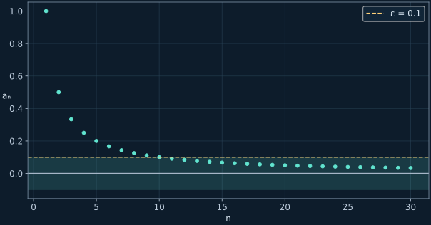
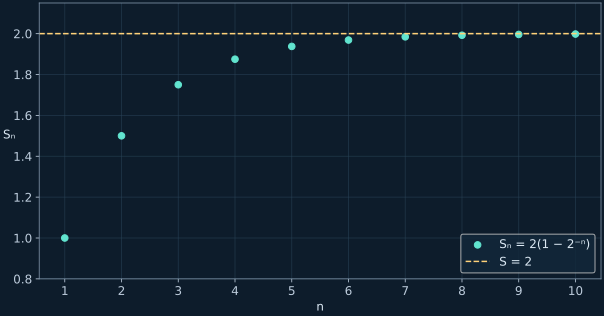

Пределы последовательностей и геометрический ряд
Главная степень n, бесконечные пределы и уравнения с условием сходимости.
← Все конспектыИсточники и границы записи
Запись 19:27 длится 23 минуты. Её SRT ошибочно повторяет предыдущую часть; содержанию про пределы соответствует SRT с именем 17:42 (до 18:32). На значительной части видео кадр неподвижен. Конец решения ряда проверен по доске около 20:10. Не показанный однозначно пример d не выдаётся за точную цитату.
1. Предел — приближение, а не равенство
Члены 1/n никогда не равны нулю при конечном натуральном n, но становятся сколь угодно близкими к нему. Для любого ε>0 достаточно взять n>1/ε, чтобы расстояние до нуля стало меньше ε.

2. Одинаковые старшие степени
Делим числитель и знаменатель на максимальную степень n. Все дроби с постоянным числителем и растущим знаменателем стремятся к нулю. Если предел знаменателя ненулевой, делим оставшиеся пределы.
Линейные выражения
Квадратичные выражения
3. Разные степени и знак бесконечности
Если p<q, предел 0. Если p=q, получаем aₚ/bq. Если p>q, модуль растёт без границ, а знак определяется отношением старших коэффициентов, поскольку n положительно.
Пример лекции
Дополнение: старшая степень в знаменателе
4. Произведения можно не раскрывать
Вынесение степеней n
Сверху вынесено n·n²=n³, снизу n²·n=n³. Одинаковые множители сократились.
5. Последовательность и ряд — разные объекты
Последовательность перечисляет отдельные члены. Ряд складывает их; его сумма определяется как предел частичных сумм Sₙ. Для ненулевого первого члена геометрический ряд сходится ровно при |q|<1. Нулевой ряд — отдельный тривиальный случай.
Дополнение: сумма 1+1/2+1/4+…

6. Сходимость зависит от x
Ряд 1+2x+4x²+8x³+…
При x=1/2 члены равны 1. При x=−1/2 частичные суммы чередуются между 1 и 0. Оба граничных значения исключаются.
7. Уравнение с бесконечной суммой
Проверяем сходимость до решения
Слева геометрический ряд с q=1/(2−x). Просто исключить x=2 недостаточно: требуется ещё сходимость.
Меньший корень меньше 1 и допустим. Больший корень лежит между 1 и 3, где ряд расходится, поэтому его отбрасываем.
Теперь попробуй самостоятельно
Дополнительные задачи находятся только во вкладке «Тренировка»: по 10 на каждый тип, с раскрываемыми ответами и разбором.
Открыть тренировку →